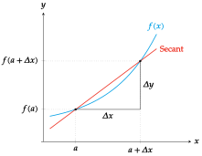
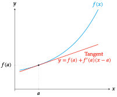
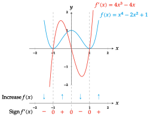
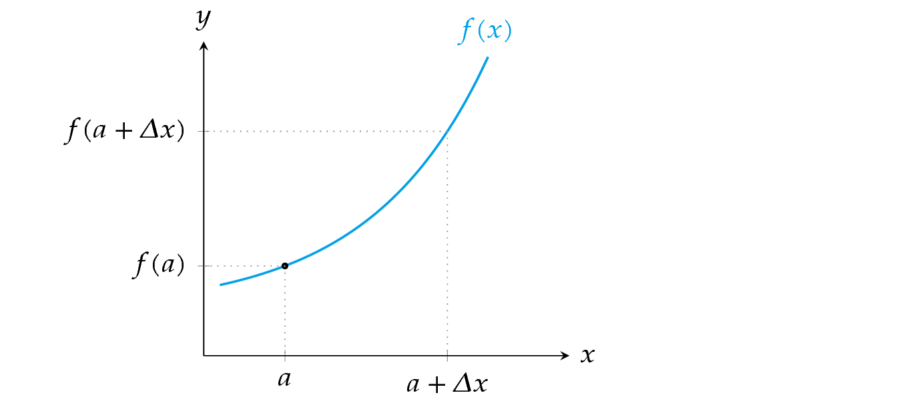
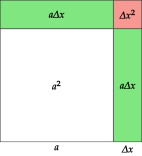
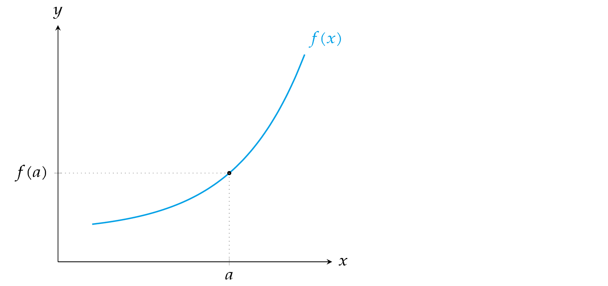
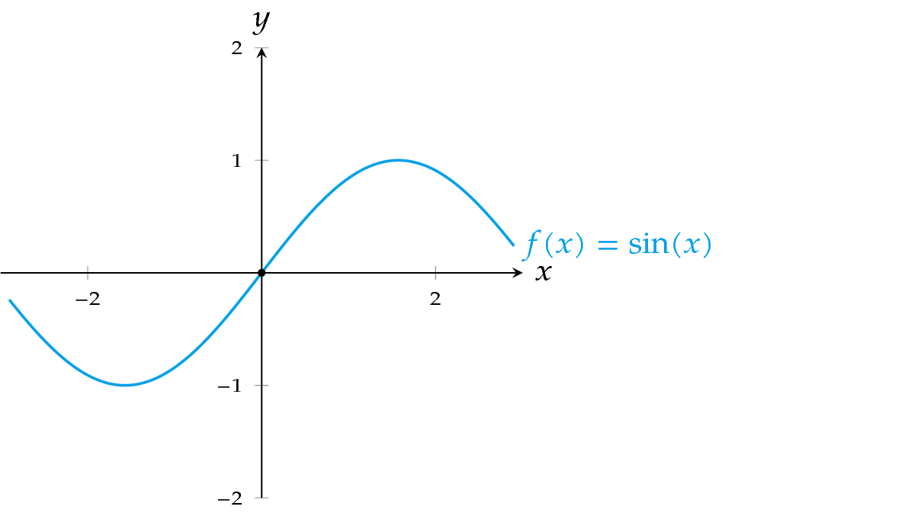

One variable differential calculus Concept of derivative Increment Definition - Increment of a variable. An increment of a variable $x$ is a change in the value of the variable; it is denoted $\Delta x$. The increment of a variable $x$ along an interval $[a,b]$ is given by $$\Delta x = b-a.$$ Definition - Increment of a function. The increment of a function $y=f(x)$ along an interval $[a,b]\subseteq Dom(f)$ is given by $$\Delta y = f(b)-f(a).$$ Example. The increment of $x$ along the interval $[2,5]$ is $\Delta x=5-2=3$, and the increment of the function $y=x^2$ along the same interval is $\Delta y=5^2-2^2=21$. Average rate of change The study of a function $y=f(x)$ requires to understand how the function changes, that is, how the dependent variable $y$ changes when we change the independent variable $x$. Definition - Average rate of change. The average rate of change of a function $y=f(x)$ in an interval $[a,a+\Delta x]\subseteq Dom(f)$, is the quotient between the increment of $y$ and the increment of $x$ in that interval; it is denoted by $$\mbox{ARC}\;f[a,a+\Delta x]=\frac{\Delta y}{\Delta x}=\frac{f(a+\Delta x)-f(a)}{\Delta x}.$$ Example - Area of a square. Let $y=x^2$ be the function that measures the area of a metallic square of side length $x$. If at any given time the side of the square is $a$, and we heat the square uniformly increasing the side by dilatation a quantity $\Delta x$, how much will increase the area of the square? $$ \Delta y = f(a+\Delta x)-f(a)=(a+\Delta x)^2-a^2= a^2+2a\Delta x+\Delta x^2-a^2=2a\Delta x+\Delta x^2. $$ What is the average rate of change in the interval $[a,a+\Delta x]$? $$\mbox{ARC}\;f[a,a+\Delta x]=\frac{\Delta y}{\Delta x}=\frac{2a\Delta x+\Delta x^2}{\Delta x}=2a+\Delta x.$$ Geometric interpretation of the average rate of change The average rate of change of a function $y=f(x)$ in an interval $[a,a+\Delta x]$ is the slope of the secant line to the graph of $f$ through the points $(a,f(a))$ and $(a+\Delta x,f(a+\Delta x))$.  Instantaneous rate of change Often it is interesting to study the rate of change of a function, not in an interval, but in a point. Knowing the tendency of change of a function in an instant can be used to predict the value of the function in nearby instants. Definition - Instantaneous rate of change and derivative. The instantaneous rate of change of a function $f$ in a point $a$, is the limit of the average rate of change of $f$ in the interval $[a,a+\Delta x]$, when $\Delta x$ approaches 0; it is denoted by $$ \begin{aligned} \textrm{IRC}\;f (a) &= \lim_{\Delta x\rightarrow 0} \textrm{ARC}\; f[a,a+\Delta x]=\lim_{\Delta x\rightarrow 0}\frac{\Delta y}{\Delta x}=\newline &= \lim_{\Delta x\rightarrow 0}\frac{f(a+\Delta x)-f(a)}{\Delta x}. \end{aligned} $$ When this limit exists, the function $f$ is said to be differentiable at the point $a$, and its value is called the derivative of $f$ at $a$, and it is denoted $f’(a)$ (Lagrange’s notation) or $\frac{df}{dx}(a)$ (Leibniz’s notation). Example - Area of a square. Let us take again the function $y=x^2$ that measures the area of a metallic square of side $x$. If at any given time the side of the square is $a$, and we heat the square uniformly increasing the side, what is the tendency of change of the area in that moment? $$\begin{aligned} \textrm{IRC}\;f(a)&=\lim_{\Delta x\rightarrow 0}\frac{\Delta y}{\Delta x} = \lim_{\Delta x\rightarrow 0}\frac{f(a+\Delta x)-f(a)}{\Delta x} =\newline &= \lim_{\Delta x\rightarrow 0}\frac{2a\Delta x+\Delta x^2}{\Delta x}=\lim_{\Delta x\rightarrow 0} 2a+\Delta x= 2a. \end{aligned} $$ Thus, $$f’(a)=\frac{df}{dx}(a)=2a,$$ indicating that the area of the square tends to increase the double of the side. Interpretation of the derivative The derivative of a function $f’(a)$ shows the growth rate of $f$ at point $a$: $f’(a)>0$ indicates an increasing tendency ($y$ increases as $x$ increases). $f’(a)<0$ indicates a decreasing tendency ($y$ decreases as $x$ increases). Example. A derivative $f’(a)=3$ indicates that $y$ tends to increase triple of $x$ at point $a$. A derivative $f’(a)=-0.5$ indicates that $y$ tends to decrease half of $x$ at point $a$. Geometric interpretation of the derivative We have seen that the average rate of change of a function $y=f(x)$ in an interval $[a,a+\Delta x]$ is the slope of the secant line, but when $\Delta x$ approaches $0$, the secant line becomes the tangent line. The instantaneous rate of change or derivative of a function $y=f(x)$ at $x=a$ is the slope of the tangent line to the graph of $f$ at point $(a,f(a))$. Thus, the equation of the tangent line to the graph of $f$ at the point $(a,f(a))$ is $$y-f(a) = f’(a)(x-a) \Leftrightarrow y = f(a)+f’(a)(x-a)$$  Kinematic applications: Linear motion Assume that the function $y=f(t)$ describes the position of an object moving in the real line at time $t$. Taking as reference the coordinates origin $O$ and the unitary vector $\mathbf{i}=(1)$, we can represent the position of the moving object $P$ at every moment $t$ with a vector $\vec{OP}=x\mathbf{i}$ where $x=f(t)$. Remark. It also makes sense when $f$ measures other magnitudes as the temperature of a body, the concentration of a gas, or the quantity of substance in a chemical reaction at every moment $t$. Kinematic interpretation of the average rate of change In this context, if we take the instants $t=t_0$ and $t=t_0+\Delta t$, both in $\mbox{Dom}(f)$, the vector $$\mathbf{v}_m=\frac{f(t_0+\Delta t)-f(t_0)}{\Delta t}$$ is known as the average velocity of the trajectory $f$ in the interval $[t_0, t_0+\Delta t]$. Example. A vehicle makes a trip from Madrid to Barcelona. Let $f(t)$ be the function that determine the position of the vehicle at every moment $t$. If the vehicle departs from Madrid (km 0) at 8:00 and arrives at Barcelona (km 600) at 14:00, then the average velocity of the vehicle in the path is $$\mathbf{v}_m=\frac{f(14)-f(8)}{14-8}=\frac{600-0}{6} = 100 km/h.$$ Kinematic interpretation of the derivative In the same context of the linear motion, the derivative of the function $f(t)$ at the moment $t_0$ is the vector $$\mathbf{v}=f’(t_0)=\lim_{\Delta t\rightarrow 0}\frac{f(t_0+\Delta t)-f(t_0)}{\Delta t},$$ that is known, as long as the limit exists, as the instantaneous velocity or simply velocity of the trajectory $f$ at moment $t_0$. That is, the derivative of the object position with respect to time is a vector field that is called velocity along the trajectory $f$. Example. Following with the previous example, what indicates the speedometer at any instant is the modulus of the instantaneous velocity vector at that moment. Algebra of derivatives Properties of the derivative If $y=c$, is a constant function, then $y’=0$ at any point. If $y=x$, is the identity function, then $y’=1$ at any point. If $u=f(x)$ and $v=g(x)$ are two differentiable functions, then $(u+v)’=u’+v'$ $(u-v)’=u’-v'$ $(u\cdot v)’=u’\cdot v+ u\cdot v'$ $\left(\dfrac{u}{v}\right)’=\dfrac{u’\cdot v-u\cdot v’}{v^2}$ Derivative of a composite function Theorem - Chain rule. If the function $y=f\circ g$ is the composition of two functions $y=f(z)$ and $z=g(x)$, then $$(f\circ g)’(x)=f’(g(x))g’(x).$$ Proof It is easy to proof this fact using the Leibniz notation $$\frac{dy}{dx}=\frac{dy}{dz}\frac{dz}{dx}=f’(z)g’(x)=f’(g(x))g’(x).$$ Example. If $f(z)=\sin z$ and $g(x)=x^2$, then $f\circ g(x)=\sin(x^2)$. Applying the chain rule the derivative of the composite function is $$(f\circ g)’(x)=f’(g(x))g’(x) = \cos(g(x)) 2x = \cos(x^2)2x.$$ On the other hand, $g\circ f(z)= (\sin z)^2$, and applying the chain rule again, its derivative is $$(g\circ f)’(z)=g’(f(z))f’(z) = 2f(z)\cos z = 2\sin z\cos z.$$ Derivative of the inverse of a function Theorem - Derivative of the inverse function. Given a function $y=f(x)$ with inverse $x=f^{-1}(y)$, then $$\left(f^{-1}\right)’(y)=\frac{1}{f’(x)}=\frac{1}{f’(f^{-1}(y))},$$ provided that $f$ is differentiable at $f^{-1}(y)$ and $f’(f^{-1}(y))\neq 0$. Proof It is easy to prove this equality using the Leibniz notation $$\frac{dx}{dy}=\frac{1}{dy/dx}=\frac{1}{f’(x)}=\frac{1}{f’(f^{-1}(y))}$$ Example. The inverse of the exponential function $y=f(x)=e^x$ is the natural logarithm $x=f^{-1}(y)=\ln y$, so we can compute the derivative of the natural logarithm using the previous theorem and we get $$\left(f^{-1}\right)’(y)=\frac{1}{f’(x)}=\frac{1}{e^x}=\frac{1}{e^{\ln y}}=\frac{1}{y}.$$ Sometimes it is easier to apply the chain rule to compute the derivative of the inverse of a function. In this example, as $\ln x$ is the inverse of $e^x$, we know that $e^{\ln x}=x$, so differentiating both sides and applying the chain rule to the left side we get $$(e^{\ln x})’=x’ \Leftrightarrow e^{\ln x}(\ln(x))’ = 1 \Leftrightarrow (\ln(x))’=\frac{1}{e^{\ln x}}=\frac{1}{x}.$$ Analysis of functions Analysis of functions: increase and decrease The main application of derivatives is to determine the variation (increase or decrease) of functions. For that we use the sign of the first derivative. Theorem. Let $f(x)$ be a function with first derivative in an interval $I\subseteq \mathbb{R}$. If $\forall x\in I\ f’(x)> 0$ then $f$ is increasing on $I$. If $\forall x\in I\ f’(x)< 0$ then $f$ is decreasing on $I$. If $f’(x_0)=0$ then $x_0$ is known as a critical point or stationary point. At this point the function can be increasing, decreasing or neither increasing nor decreasing. Example The function $f(x)=x^2$ has derivative $f’(x)=2x$; it is decreasing on $\mathbb{R}^-$ as $f’(x)< 0$ $\forall x\in \mathbb{R}^-$ and increasing on $\mathbb{R}^+$ as $f’(x)> 0$ $\forall x\in \mathbb{R}^+$. It has a critical point at $x=0$, as $f’(0)=0$; at this point the function is neither increasing nor decreasing. A function can be increasing or decreasing on an interval and not have first derivative. Example. Let us analyze the increase and decrease of the function $f(x)=x^4-2x^2+1$. Its first derivative is $f’(x)=4x^3-4x$.  Analysis of functions: relative extrema As a consequence of the previous result we can also use the first derivative to determine the relative extrema of a function. Theorem - First derivative test. Let $f(x)$ be a function with first derivative in an interval $I\subseteq \mathbb{R}$ and let $x_0\in I$ be a critical point of $f$ ($f’(x_0)=0$). If $f’(x)>0$ on an open interval extending left from $x_0$ and $f’(x)<0$ on an open interval extending right from $x_0$, then $f$ has a relative maximum at $x_0$. If $f’(x)<0$ on an open interval extending left from $x_0$ and $f’(x)>0$ on an open interval extending right from $x_0$, then $f$ has a relative minimum at $x_0$. If $f’(x)$ has the same sign on both an open interval extending left from $x_0$ and an open interval extending right from $x_0$, then $f$ has an inflection point at $x_0$. A vanishing derivative is a necessary but not sufficient condition for the function to have a relative extrema at a point. Example. The function $f(x)=x^3$ has derivative $f’(x)=3x^2$; it has a critical point at $x=0$. However it does not have a relative extrema at that point, but an inflection point. Example. Consider again the function $f(x)=x^4-2x^2+1$ and let us analyze its relative extrema now. Its first derivative is $f’(x)=4x^3-4x$. Analysis of functions: concavity The concavity of a function can be determined by de second derivative. Theorem. Let $f(x)$ be a function with second derivative in an interval $I\subseteq \mathbb{R}$. If $\forall x\in I\ f’’(x)> 0$ then $f$ is concave up (convex) on $I$. If $\forall x\in I\ f’’(x)< 0$ then $f$ is concave down (concave) on $I$. Example. The function $f(x)=x^2$ has second derivative $f’’(x)=2>0$ $\forall x\in \mathbb{R}$, so it is concave up in all $\mathbb{R}$. A function can be concave up or down and not have second derivative. Example. Let us analyze the concavity of the same function of previous examples $f(x)=x^4-2x^2+1$. Its second derivative is $f’’(x)=12x^2-4$. Function approximation Approximating a function with the derivative The tangent line to the graph of a function $f(x)$ at $x=a$ can be used to approximate $f$ in a neighbourhood of $a$. Thus, the increment of a function $f(x)$ in an interval $[a,a+\Delta x]$ can be approximated multiplying the derivative of $f$ at $a$ by the increment of $x$ $$\Delta y \approx f’(a)\Delta x$$  Example - Area of a square. In the previous example of the function $y=x^2$ that measures the area of a metallic square of side $x$, if the side of the square is $a$ and we increment it by a quantity $\Delta x$, then the increment on the area will be approximately $$\Delta y \approx f’(a)\Delta x = 2a\Delta x.$$ In the figure below we can see that the error of this approximation is $\Delta x^2$, which is smaller than $\Delta x$ when $\Delta x$ approaches to 0.  Approximating a function by a polynomial Another useful application of the derivative is the approximation of functions by polynomials. Polynomials are functions easy to calculate (sums and products) with very good properties: Defined in all the real numbers. Continuous. Differentiable of all orders with continuous derivatives. Goal Approximate a function $f(x)$ by a polynomial $p(x)$ near a point $x=a$. Approximating a function by a polynomial of order 0 A polynomial of degree 0 has equation $$p(x) = c_0,$$ where $c_0$ is a constant. As the polynomial should coincide with the function at $a$, it must satisfy $$p(a) = c_0 = f(a).$$ Therefore, the polynomial of degree 0 that best approximate $f$ near $a$ is $$p(x) = f(a).$$ Approximating a function by a polynomial of order 1 A polynomial of order 1 has equation $$p(x) = c_0+c_1x,$$ but it can also be written as $$p(x) = c_0+c_1(x-a).$$ Among all the polynomials of degree 1, the one that best approximates $f(x)$ near $a$ is that which meets the following conditions $p$ and $f$ coincide at $a$: $p(a) = f(a)$, $p$ and $f$ have the same rate of change at $a$: $p’(a) = f’(a)$. The last condition guarantees that $p$ and $f$ have approximately the same tendency, but it requires the function $f$ to be differentiable at $a$. Imposing the previous conditions we have $p(x)=c_0+c_1(x-a) \Rightarrow p(a)=c_0+c_1(a-a)=c_0=f(a)$, $p’(x)=c_1 \Rightarrow p’(a)=c_1=f’(a)$. Therefore, the polynomial of degree 1 that best approximates $f$ near $a$ is $$p(x) = f(a)+f ‘(a)(x-a),$$ which turns out to be the tangent line to $f$ at $(a,f(a))$. Approximating a function by a polynomial of order 2 A polynomial of order 2 is a parabola with equation $$p(x) = c_0+c_1x+c_2x^2,$$ but it can also be written as $$p(x) = c_0+c_1(x-a)+c_2(x-a)^2.$$ Among all the polynomials of degree 2, the one that best approximate $f(x)$ near $a$ is that which meets the following conditions $p$ and $f$ coincide at $a$: $p(a) = f(a)$, $p$ and $f$ have the same rate of change at $a$: $p’(a) = f’(a)$. $p$ and $f$ have the same concavity at $a$: $p’’(a)=f’’(a)$. The last condition requires the function $f$ to be differentiable twice at $a$. Imposing the previous conditions we have $p(x)=c_0+c_1(x-a) \Rightarrow p(a)=c_0+c_1(a-a)=c_0=f(a)$, $p’(x)=c_1 \Rightarrow p’(a)=c_1=f’(a)$. $p’’(x)=2c_2 \Rightarrow p’’(a)=2c_2=f’’(a) \Rightarrow c_2=\frac{f’’(a)}{2}$. Therefore, the polynomial of degree 2 that best approximates $f$ near $a$ is $$p(x) = f(a)+f’(a)(x-a)+\frac{f’’(a)}{2}(x-a)^2.$$  Approximating a function by a polynomial of order $n$ A polynomial of order $n$ has equation $$p(x) = c_0+c_1x+c_2x^2+\cdots +c_nx^n,$$ but it can also be written as $$p(x) = c_0+c_1(x-a)+c_2(x-a)^2+\cdots +c_n(x-a)^n.$$ Among all the polynomials of degree $n$, the one that best approximate $f(x)$ near $a$ is that which meets the following $n+1$ conditions: $p(a) = f(a)$, $p’(a) = f’(a)$, $p’’(a)=f’’(a)$, $\cdots$ $p^{(n)}(a)=f^{(n)}(a)$. The successive derivatives of $p$ are $$ \begin{aligned} p(x) &= c_0+c_1(x-a)+c_2(x-a)^2+\cdots +c_n(x-a)^n,\newline p’(x)& = c_1+2c_2(x-a)+\cdots +nc_n(x-a)^{n-1},\newline p’’(x)& = 2c_2+\cdots +n(n-1)c_n(x-a)^{n-2},\newline \vdots \newline p^{(n)}(x)&= n(n-1)(n-2)\cdots 1 c_n=n!c_n. \end{aligned} $$ Imposing the previous conditions we have $p(a) = c_0+c_1(a-a)+c_2(a-a)^2+\cdots +c_n(a-a)^n=c_0=f(a)$, $p’(a) = c_1+2c_2(a-a)+\cdots +nc_n(a-a)^{n-1}=c_1=f’(a)$, $p’’(a) = 2c_2+\cdots +n(n-1)c_n(a-a)^{n-2}=2c_2=f’’(a)\Rightarrow c_2=f’’(a)/2$, $\cdots$ $p^{(n)}(a)=n!c_n=f^{(n)}(a)=c_n=\frac{f^{(n)}(a)}{n!}$. Taylor polynomial of order $n$ Definition - Taylor polynomial. Given a function $f(x)$ differentiable $n$ times at $x=a$, the Taylor polynomial of order $n$ of $f$ at $a$ is the polynomial with equation $$ \begin{aligned} p_{f,a}^n(x) &= f(a) + f’(a)(x-a) + \frac{f’’(a)}{2}(x-a)^2 + \cdots + \frac{f^{(n)}(a)}{n!}(x-a)^n = \newline &= \sum_{i=0}^{n}\frac{f^{(i)}(a)}{i!}(x-a)^i. \end{aligned} $$ The Taylor polynomial of order $n$ of $f$ at $a$ is the $n$th degree polynomial that best approximates $f$ near $a$, as is the only one that meets the previous conditions. Example. Let us approximate the function $f(x)=\log x$ near the value $1$ by a polynomial of order $3$. The equation of the Taylor polynomial of order $3$ of $f$ at $a=1$ is $$p_{f,1}^3(x)=f(1)+f’(1)(x-1)+\frac{f’’(1)}{2}(x-1)^2+\frac{f’’’(1)}{3!}(x-1)^3.$$ The derivatives of $f$ at $1$ up to order $3$ are $$ \begin{array}{lll} f(x)=\log x & \quad & f(1)=\log 1 =0,\newline f’(x)=1/x & & f’(1)=1/1=1,\newline f’’(x)=-1/x^2 & & f’’(1)=-1/1^2=-1,\newline f’’’(x)=2/x^3 & & f’’’(1)=2/1^3=2. \end{array} $$ And substituting into the polynomial equation we get $$p_{f,1}^3(x)=0+1(x-1)+\frac{-1}{2}(x-1)^2+\frac{2}{3!}(x-1)^3= \frac{2}{3}x^3-\frac{3}{2}x^2+3x-\frac{11}{6}.$$ Maclaurin polynomial of order $n$ The Taylor polynomial equation has a simpler form when the polynomial is calculated at $0$. This special case of Taylor polynomial at $0$ is known as the Maclaurin polynomial. Definition - Maclaurin polynomial. Given a function $f(x)$ differentiable $n$ times at $0$, the Maclaurin polynomial of order $n$ of $f$ is the polynomial with equation $$ \begin{aligned} p_{f,0}^n(x)&=f(0)+f’(0)x+\frac{f’’(0)}{2}x^2+\cdots +\frac{f^{(n)}(0)}{n!}x^n = \newline &=\sum_{i=0}^{n}\frac{f^{(i)}(0)}{i!}x^i. \end{aligned} $$ Example. Let us approximate the function $f(x)=\sin x$ near the value $0$ by a polynomial of order $3$. The Maclaurin polynomial equation of order $3$ of $f$ is $$p_{f,0}^3(x)=f(0)+f’(0)x+\frac{f’’(0)}{2}x^2+\frac{f’’’(0)}{3!}x^3.$$ The derivatives of $f$ at $0$ up to order $3$ are $$\begin{array}{lll} f(x)=\sin x & \quad & f(0)=\sin 0 =0,\newline f’(x)=\cos x & & f’(0)=\cos 0=1,\newline f’’(x)=-\sin x & & f’’(0)=-\sin 0=0,\newline f’’’(x)=-\cos x & & f’’’(0)=-\cos 0=-1. \end{array} $$ And substituting into the polynomial equation we get $$p_{f,0}^3(x)=0+1\cdot x+\frac{0}{2}x^2+\frac{-1}{3!}x^3= x-\frac{x^3}{6}.$$  Maclaurin polynomials of elementary functions $$ \renewcommand{\arraystretch}{2.5} \begin{array}{cc} \hline f(x) & p_{f,0}^n(x) \newline \hline \sin x & \displaystyle x - \frac{x^3}{3!} + \frac{x^5}{5!} - \cdots + (-1)^k\frac{x^{2k-1}}{(2k-1)!} \mbox{ if $n=2k$ or $n=2k-1$}\newline \cos x & \displaystyle 1 - \frac{x^2}{2!} + \frac{x^4}{4!} - \cdots + (-1)^k\frac{x^{2k}}{(2k)!} \mbox{ if $n=2k$ or $n=2k+1$}\newline \arctan x & \displaystyle x - \frac{x^3}{3} + \frac{x^5}{5} - \cdots + (-1)^k\frac{x^{2k-1}}{(2k-1)} \mbox{ if $n=2k$ or $n=2k-1$}\newline e^x & \displaystyle 1 + x + \frac{x^2}{2!} + \frac{x^3}{3!} + \cdots + \frac{x^n}{n!}\newline \log(1+x) & \displaystyle x - \frac{x^2}{2} + \frac{x^3}{3} - \cdots + (-1)^{n-1}\frac{x^n}{n}\newline \hline \end{array} $$ Taylor remainder and Taylor formula Taylor polynomials allow to approximate a function in a neighborhood of a value $a$, but most of the times there is an error in the approximation. Definition - Taylor remainder. Given a function $f(x)$ and its Taylor polynomial of order $n$ at $a$, $p_{f,a}^n(x)$, the Taylor remainder of order $n$ of $f$ at $a$ is the difference between the function and the polynomial, $$r_{f,a}^n(x)=f(x)-p_{f,a}^n(x).$$ The Taylor remainder measures the error int the approximation of $f(x)$ by the Taylor polynomial and allow us to express the function as the Taylor polynomial plus the Taylor remainder $$f(x)=p_{f,a}^n(x) + r_{f,a}^n(x).$$ This expression is known as the Taylor formula of order $n$ or $f$ at $a$. It can be proved that $$\lim_{h\rightarrow 0}\frac{r_{f,a}^n(a+h)}{h^n}=0,$$ which means that the remainder $r_{f,a}^n(a+h)$ is much smaller than $h^n$. Derivative Tangent Line Previous Analytic Geometry Next Integral calculus